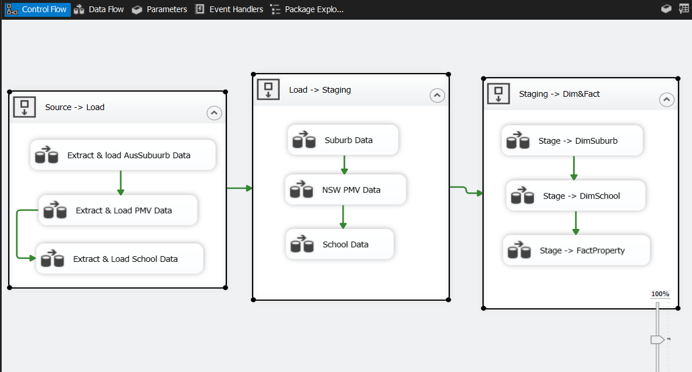

Property Data Engineering Competition Sprint – Part 1 || SQL Server, SSIS, Visual Studio
🎯 Objective
To build an integrated analytical solution that empowers users to explore suburb-level
insights across
House Value, Rental Trends, School Quality, Transport Accessibility, and Crime Rates, while
enabling
seamless drill-through to SSRS paginated reports for detailed, printable analysis.

End-to-End SSIS
ETL Pipeline from
raw source to Snowflake schema.
🧠 Project Overview
To design and implement a structured ETL pipeline using SSIS that transforms raw
property and school data
into a Snowflake-modeled data warehouse, enabling accurate and efficient reporting.